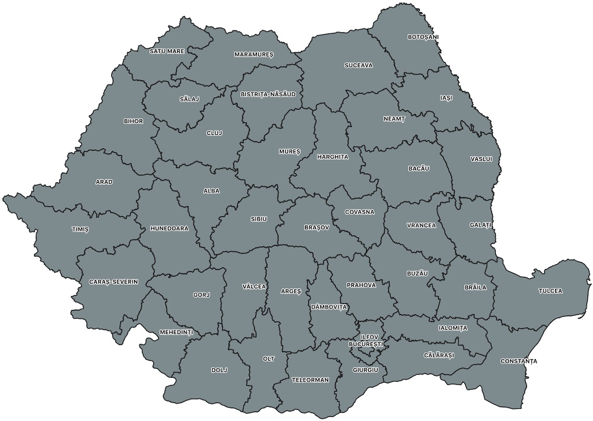

Cartografie electorală în linie de comandă - Partea 5: Hărțile clasice, la nivel de UAT și județ
5.1. Hărțile clasice
Ne-am aruncat la tot felul de reprezentări detaliate da' nu am zis nimic despre reprezentările clasice, la nivel de UAT și județ. O vom face în această secțiune a tutorialului și vom încorpora și o serie din experimentele de subdivizare încercate anterior.
5.2. Procesarea datelor la nivel de UAT
Pentru aceasta nu facem altceva decît să urmăm pașii anteriori, cu aceleași surse de atribute, dar cu alte geometrii, mai simple și mai rapid de procesat.
5.2.1. Unirea geometriilor UAT cu rezultatele din procesele verbale
Se face pe baza cîmpului comun SIRUTA. Rezultatele din secțiile cu același cod SIRUTA vor fi cumulate folosind funcția SUM. Tot acum calculăm și procentele candidaților. Rezultatele vor fi stocate în tabelele tur1.uat_pv_cumulat_tur1 și tur2.uat_pv_cumulat_tur2:
psql -h localhost -p 5432 -U user -d alegeri -c "
CREATE TABLE tur1.uat_pv_cumulat_tur1 AS SELECT uat.geom, uat.natcode, uat.name, uat.county, SUM(sectii.g1 :: INTEGER) as g1, SUM(sectii.g2 :: INTEGER) as g2, SUM(sectii.g3 :: INTEGER) as g3, SUM(sectii.g4 :: INTEGER) as g4, SUM(sectii.g5 :: INTEGER) as g5, SUM(sectii.g6 :: INTEGER) as g6, SUM(sectii.g7 :: INTEGER) as g7, SUM(sectii.g8 :: INTEGER) as g8, SUM(sectii.g9 :: INTEGER) as g9, SUM(sectii.g10 :: INTEGER) as g10, SUM(sectii.g11 :: INTEGER) as g11, SUM(sectii.g12 :: INTEGER) as g12, SUM(sectii.g13 :: INTEGER) as g13, SUM(sectii.g14 :: INTEGER) as g14
FROM referinta.uat_simplificat AS uat, referinta.pv_tur1 AS sectii WHERE uat.natcode = sectii.siruta GROUP BY uat.natcode, uat.geom, uat.name, uat.county, sectii.siruta;
ALTER TABLE tur1.uat_pv_cumulat_tur1 ADD COLUMN g1p float;
UPDATE tur1.uat_pv_cumulat_tur1 SET g1p = ROUND(((g1 / (g1 + g2 + g3 + g4 + g5 + g6 + g7 + g8 + g9 + g10 + g11 + g12 + g13 + g14)::float) * 100)::numeric, 2);
ALTER TABLE tur1.uat_pv_cumulat_tur1 ADD COLUMN g2p float;
UPDATE tur1.uat_pv_cumulat_tur1 SET g2p = ROUND(((g2 / (g1 + g2 + g3 + g4 + g5 + g6 + g7 + g8 + g9 + g10 + g11 + g12 + g13 + g14)::float) * 100)::numeric, 2);
ALTER TABLE tur1.uat_pv_cumulat_tur1 ADD COLUMN g3p float;
UPDATE tur1.uat_pv_cumulat_tur1 SET g3p = ROUND(((g3 / (g1 + g2 + g3 + g4 + g5 + g6 + g7 + g8 + g9 + g10 + g11 + g12 + g13 + g14)::float) * 100)::numeric, 2);
ALTER TABLE tur1.uat_pv_cumulat_tur1 ADD COLUMN g4p float;
UPDATE tur1.uat_pv_cumulat_tur1 SET g4p = ROUND(((g4 / (g1 + g2 + g3 + g4 + g5 + g6 + g7 + g8 + g9 + g10 + g11 + g12 + g13 + g14)::float) * 100)::numeric, 2);
ALTER TABLE tur1.uat_pv_cumulat_tur1 ADD COLUMN g5p float;
UPDATE tur1.uat_pv_cumulat_tur1 SET g5p = ROUND(((g5 / (g1 + g2 + g3 + g4 + g5 + g6 + g7 + g8 + g9 + g10 + g11 + g12 + g13 + g14)::float) * 100)::numeric, 2);
ALTER TABLE tur1.uat_pv_cumulat_tur1 ADD COLUMN g6p float;
UPDATE tur1.uat_pv_cumulat_tur1 SET g6p = ROUND(((g6 / (g1 + g2 + g3 + g4 + g5 + g6 + g7 + g8 + g9 + g10 + g11 + g12 + g13 + g14)::float) * 100)::numeric, 2);
ALTER TABLE tur1.uat_pv_cumulat_tur1 ADD COLUMN g7p float;
UPDATE tur1.uat_pv_cumulat_tur1 SET g7p = ROUND(((g7 / (g1 + g2 + g3 + g4 + g5 + g6 + g7 + g8 + g9 + g10 + g11 + g12 + g13 + g14)::float) * 100)::numeric, 2);
ALTER TABLE tur1.uat_pv_cumulat_tur1 ADD COLUMN g8p float;
UPDATE tur1.uat_pv_cumulat_tur1 SET g8p = ROUND(((g8 / (g1 + g2 + g3 + g4 + g5 + g6 + g7 + g8 + g9 + g10 + g11 + g12 + g13 + g14)::float) * 100)::numeric, 2);
ALTER TABLE tur1.uat_pv_cumulat_tur1 ADD COLUMN g9p float;
UPDATE tur1.uat_pv_cumulat_tur1 SET g9p = ROUND(((g9 / (g1 + g2 + g3 + g4 + g5 + g6 + g7 + g8 + g9 + g10 + g11 + g12 + g13 + g14)::float) * 100)::numeric, 2);
ALTER TABLE tur1.uat_pv_cumulat_tur1 ADD COLUMN g10p float;
UPDATE tur1.uat_pv_cumulat_tur1 SET g10p = ROUND(((g10 / (g1 + g2 + g3 + g4 + g5 + g6 + g7 + g8 + g9 + g10 + g11 + g12 + g13 + g14)::float) * 100)::numeric, 2);
ALTER TABLE tur1.uat_pv_cumulat_tur1 ADD COLUMN g11p float;
UPDATE tur1.uat_pv_cumulat_tur1 SET g11p = ROUND(((g11 / (g1 + g2 + g3 + g4 + g5 + g6 + g7 + g8 + g9 + g10 + g11 + g12 + g13 + g14)::float) * 100)::numeric, 2);
ALTER TABLE tur1.uat_pv_cumulat_tur1 ADD COLUMN g12p float;
UPDATE tur1.uat_pv_cumulat_tur1 SET g12p = ROUND(((g12 / (g1 + g2 + g3 + g4 + g5 + g6 + g7 + g8 + g9 + g10 + g11 + g12 + g13 + g14)::float) * 100)::numeric, 2);
ALTER TABLE tur1.uat_pv_cumulat_tur1 ADD COLUMN g13p float;
UPDATE tur1.uat_pv_cumulat_tur1 SET g13p = ROUND(((g13 / (g1 + g2 + g3 + g4 + g5 + g6 + g7 + g8 + g9 + g10 + g11 + g12 + g13 + g14)::float) * 100)::numeric, 2);
ALTER TABLE tur1.uat_pv_cumulat_tur1 ADD COLUMN g14p float;
UPDATE tur1.uat_pv_cumulat_tur1 SET g14p = ROUND(((g14 / (g1 + g2 + g3 + g4 + g5 + g6 + g7 + g8 + g9 + g10 + g11 + g12 + g13 + g14)::float) * 100)::numeric, 2);
ALTER TABLE tur1.uat_pv_cumulat_tur1 ADD COLUMN castigator integer;
UPDATE tur1.uat_pv_cumulat_tur1 SET castigator = CASE
WHEN GREATEST(g1, g2, g3, g4, g5, g6, g7, g8, g9, g10, g11, g12, g13, g14) = g1 THEN 1
WHEN GREATEST(g1, g2, g3, g4, g5, g6, g7, g8, g9, g10, g11, g12, g13, g14) = g2 THEN 2
WHEN GREATEST(g1, g2, g3, g4, g5, g6, g7, g8, g9, g10, g11, g12, g13, g14) = g3 THEN 3
WHEN GREATEST(g1, g2, g3, g4, g5, g6, g7, g8, g9, g10, g11, g12, g13, g14) = g4 THEN 4
WHEN GREATEST(g1, g2, g3, g4, g5, g6, g7, g8, g9, g10, g11, g12, g13, g14) = g5 THEN 5
WHEN GREATEST(g1, g2, g3, g4, g5, g6, g7, g8, g9, g10, g11, g12, g13, g14) = g6 THEN 6
WHEN GREATEST(g1, g2, g3, g4, g5, g6, g7, g8, g9, g10, g11, g12, g13, g14) = g7 THEN 7
WHEN GREATEST(g1, g2, g3, g4, g5, g6, g7, g8, g9, g10, g11, g12, g13, g14) = g8 THEN 8
WHEN GREATEST(g1, g2, g3, g4, g5, g6, g7, g8, g9, g10, g11, g12, g13, g14) = g9 THEN 9
WHEN GREATEST(g1, g2, g3, g4, g5, g6, g7, g8, g9, g10, g11, g12, g13, g14) = g10 THEN 10
WHEN GREATEST(g1, g2, g3, g4, g5, g6, g7, g8, g9, g10, g11, g12, g13, g14) = g11 THEN 11
WHEN GREATEST(g1, g2, g3, g4, g5, g6, g7, g8, g9, g10, g11, g12, g13, g14) = g12 THEN 12
WHEN GREATEST(g1, g2, g3, g4, g5, g6, g7, g8, g9, g10, g11, g12, g13, g14) = g13 THEN 13
WHEN GREATEST(g1, g2, g3, g4, g5, g6, g7, g8, g9, g10, g11, g12, g13, g14) = g14 THEN 14
END;
CREATE TABLE tur2.uat_pv_cumulat_tur2 AS SELECT uat.geom, uat.natcode, uat.name, uat.county, SUM(sectii.g1 :: INTEGER) as g1, SUM(sectii.g2 :: INTEGER) as g2
FROM referinta.uat_simplificat AS uat, referinta.pv_tur2 AS sectii WHERE uat.natcode = sectii.siruta GROUP BY uat.natcode, uat.geom, uat.name, uat.county, sectii.siruta;
ALTER TABLE tur2.uat_pv_cumulat_tur2 ADD COLUMN g1p float;
UPDATE tur2.uat_pv_cumulat_tur2 SET g1p = ROUND(((g1 / (g1 + g2)::float) * 100)::numeric, 2);
ALTER TABLE tur2.uat_pv_cumulat_tur2 ADD COLUMN g2p float;
UPDATE tur2.uat_pv_cumulat_tur2 SET g2p = ROUND(((g2 / (g1 + g2)::float) * 100)::numeric, 2);
ALTER TABLE tur2.uat_pv_cumulat_tur2 ADD COLUMN castigator integer;
UPDATE tur2.uat_pv_cumulat_tur2 SET castigator = 1 WHERE g1 > g2;
UPDATE tur2.uat_pv_cumulat_tur2 SET castigator = 2 WHERE g1 < g2;
UPDATE tur2.uat_pv_cumulat_tur2 SET castigator = 0 WHERE g1 = g2;"
5.2.1. Adăugarea entității pentru diaspora
Ca și în cazul secțiilor, vom adăuga o entitate separată pentru cumularea voturilor din diaspora:
psql -h localhost -p 5432 -U user -d alegeri -c "
INSERT INTO tur1.uat_pv_cumulat_tur1 (geom, natcode, g1, g2, g3, g4, g5, g6, g7, g8, g9, g10, g11, g12, g13, g14) (SELECT ST_Multi(ST_Buffer(ST_SetSRID(ST_MakePoint(2297467, 6009221), 3857), 110000)), '20000', 341450, 41550, 178845, 3363, 17727, 1242, 2378, 2575, 2017, 23535, 2741, 11101, 2028, 16056);
UPDATE tur1.uat_pv_cumulat_tur1 SET g1p = ROUND(((g1 / (g1 + g2 + g3 + g4 + g5 + g6 + g7 + g8 + g9 + g10 + g11 + g12 + g13 + g14)::float) * 100)::numeric, 2) WHERE natcode = '20000';
UPDATE tur1.uat_pv_cumulat_tur1 SET g2p = ROUND(((g2 / (g1 + g2 + g3 + g4 + g5 + g6 + g7 + g8 + g9 + g10 + g11 + g12 + g13 + g14)::float) * 100)::numeric, 2) WHERE natcode = '20000';
UPDATE tur1.uat_pv_cumulat_tur1 SET g3p = ROUND(((g3 / (g1 + g2 + g3 + g4 + g5 + g6 + g7 + g8 + g9 + g10 + g11 + g12 + g13 + g14)::float) * 100)::numeric, 2) WHERE natcode = '20000';
UPDATE tur1.uat_pv_cumulat_tur1 SET g4p = ROUND(((g4 / (g1 + g2 + g3 + g4 + g5 + g6 + g7 + g8 + g9 + g10 + g11 + g12 + g13 + g14)::float) * 100)::numeric, 2) WHERE natcode = '20000';
UPDATE tur1.uat_pv_cumulat_tur1 SET g5p = ROUND(((g5 / (g1 + g2 + g3 + g4 + g5 + g6 + g7 + g8 + g9 + g10 + g11 + g12 + g13 + g14)::float) * 100)::numeric, 2) WHERE natcode = '20000';
UPDATE tur1.uat_pv_cumulat_tur1 SET g6p = ROUND(((g6 / (g1 + g2 + g3 + g4 + g5 + g6 + g7 + g8 + g9 + g10 + g11 + g12 + g13 + g14)::float) * 100)::numeric, 2) WHERE natcode = '20000';
UPDATE tur1.uat_pv_cumulat_tur1 SET g7p = ROUND(((g7 / (g1 + g2 + g3 + g4 + g5 + g6 + g7 + g8 + g9 + g10 + g11 + g12 + g13 + g14)::float) * 100)::numeric, 2) WHERE natcode = '20000';
UPDATE tur1.uat_pv_cumulat_tur1 SET g8p = ROUND(((g8 / (g1 + g2 + g3 + g4 + g5 + g6 + g7 + g8 + g9 + g10 + g11 + g12 + g13 + g14)::float) * 100)::numeric, 2) WHERE natcode = '20000';
UPDATE tur1.uat_pv_cumulat_tur1 SET g9p = ROUND(((g9 / (g1 + g2 + g3 + g4 + g5 + g6 + g7 + g8 + g9 + g10 + g11 + g12 + g13 + g14)::float) * 100)::numeric, 2) WHERE natcode = '20000';
UPDATE tur1.uat_pv_cumulat_tur1 SET g10p = ROUND(((g10 / (g1 + g2 + g3 + g4 + g5 + g6 + g7 + g8 + g9 + g10 + g11 + g12 + g13 + g14)::float) * 100)::numeric, 2) WHERE natcode = '20000';
UPDATE tur1.uat_pv_cumulat_tur1 SET g11p = ROUND(((g11 / (g1 + g2 + g3 + g4 + g5 + g6 + g7 + g8 + g9 + g10 + g11 + g12 + g13 + g14)::float) * 100)::numeric, 2) WHERE natcode = '20000';
UPDATE tur1.uat_pv_cumulat_tur1 SET g12p = ROUND(((g12 / (g1 + g2 + g3 + g4 + g5 + g6 + g7 + g8 + g9 + g10 + g11 + g12 + g13 + g14)::float) * 100)::numeric, 2) WHERE natcode = '20000';
UPDATE tur1.uat_pv_cumulat_tur1 SET g13p = ROUND(((g13 / (g1 + g2 + g3 + g4 + g5 + g6 + g7 + g8 + g9 + g10 + g11 + g12 + g13 + g14)::float) * 100)::numeric, 2) WHERE natcode = '20000';
UPDATE tur1.uat_pv_cumulat_tur1 SET g14p = ROUND(((g14 / (g1 + g2 + g3 + g4 + g5 + g6 + g7 + g8 + g9 + g10 + g11 + g12 + g13 + g14)::float) * 100)::numeric, 2) WHERE natcode = '20000';
UPDATE tur1.uat_pv_cumulat_tur1 SET castigator = 1 WHERE natcode = '20000';
UPDATE tur1.uat_pv_cumulat_tur1 SET name = 'Diaspora' WHERE natcode = '20000';
INSERT INTO tur2.uat_pv_cumulat_tur2 (geom, natcode, g1, g2) (SELECT ST_Multi(ST_Buffer(ST_SetSRID(ST_MakePoint(2297467, 6009221), 3857), 110000)), '20000', 863850, 55493);
UPDATE tur2.uat_pv_cumulat_tur2 SET g1p = ROUND(((g1 / (g1 + g2)::float) * 100)::numeric, 2) WHERE natcode = '20000';
UPDATE tur2.uat_pv_cumulat_tur2 SET g2p = ROUND(((g2 / (g1 + g2)::float) * 100)::numeric, 2) WHERE natcode = '20000';
UPDATE tur2.uat_pv_cumulat_tur2 SET castigator = 1 WHERE natcode = '20000';
UPDATE tur2.uat_pv_cumulat_tur2 SET name = 'Diaspora' WHERE natcode = '20000';"
5.2.3. Inspectarea rezultatelor
Rezultatele pot fi observate și comparate folosind aplicația interactivă de mai jos:
Compararea interactivă a rezultatelor la nivel de UAT în cele două tururi (mutați slider-ul pentru a vedea diferențele).
Legenda (noi le-am alocat culori la toți, deși nu toți au cîștigat o secție sau un UAT, îi veți regăsi cu respectivele culori în reprezentările la nivel de poligon procentual):
| Nr. | Culoare | Candidat | Observații |
|---|---|---|---|
| 1 | #8dbbda | Klaus-Werner Iohannis | |
| 2 | #b7cdb6 | Theodor Paleologu | |
| 3 | #ffc07a | Ilie-Dan Barna | |
| 4 | #97d093 | Hunor Kelemen | În turul 2 culoarea desemnează situațiile de egalitate |
| 5 | #f38b8b | Vasilica-Viorica Dăncilă | |
| 6 | #ebda9a | Cătălin-Sorin Ivan | |
| 7 | #bec5c7 | Ninel Peia | |
| 8 | #e29d9b | Sebastian-Constantin Popescu | |
| 9 | #ace5fa | John-Ion Banu | |
| 10 | #c9a895 | Mircea Diaconu | |
| 11 | #9fcccb | Bogdan-Dragos-Aureliu Marian Stanoevici | |
| 12 | #c7abcd | Ramona-Ioana Bruynseels | |
| 13 | #fd97f5 | Viorel Cataramă | |
| 14 | #f1abc4 | Alexandru Cumpănașu |
Pînă ajungem la publicarea interactivă, putem face aici o comparație interactivă între harta la nivel de secție și cea de UAT:
Compararea interactivă a rezultatelor de la nivel de UAT cu cele de la nivel de secție în turul 1 (mutați slider-ul pentru a vedea diferențele).
5.2.4. Reprezentarea culorilor votului
În secțiunea anterioară am încercat să vedem cît mai detaliat modul în care culorile votului sînt repartizate. Acest lucru se poate face și metoda de simbolizare. Pînă acum culorile noastre nu au avut nuanțe, culoarea identificînd doar cîștigătorul. O modalitate de a evidenția performanța unui candidat este de a corela intensitatea culorii cu procentele obținute. Astfel, culoarea indică cîștigătorul unui UAT iar intensitatea culorii indică performanța acestuia. În turul 2, unde avem doar doi candidați, prin analogie, intensitatea culorii cîștigătorului ne indică și performanța contracandidatului. Am încercat să definim o astfel de paletă de culori:
| Interval procente | Dăncilă | Iohannis |
|---|---|---|
| > 90% | #e31a1c | #1f78b4 |
| 80% - 90% | #e94849 | #4c93c3 |
| 70% - 80% | #ef7677 | #79aed2 |
| 60% - 70% | #f4a4a4 | #a6c9e1 |
| 50% - 60% | #fad2d2 | #d3e4f0 |
| Egalitate | #33a02c | #33a02c |
Rezultatul aplicării asupra datelor se poate observa în figura de mai jos:
Utilizarea intensității culorii pentru a indica performanța candidatului.
Intensitatea culorii poate fi dată și de alți parametri. De exemplu, în anumite analize, numărul de voturi poate fi mai relevant decît procentul obținut. Pentru ilustrare, am folosit aceleași date și aceleași culori pe dar cu intervalele construite pe numărul de voturi la nivel de UAT:
| Interval voturi | Dăncilă | Iohannis |
|---|---|---|
| > 50.000 | #e31a1c | #1f78b4 |
| 20.000 - 49.999 | #e94849 | #4c93c3 |
| 2.000 - 19.999 | #ef7677 | #79aed2 |
| 500 - 1.999 | #f4a4a4 | #a6c9e1 |
| 0 - 499 | #fad2d2 | #d3e4f0 |
| Egalitate | #33a02c | #33a02c |
Rezultatul este ilustrat în figura de mai jos:
Utilizarea numărului de voturi pentru stabilirea intensității culorii.
Stabilirea intervalelor este însă o chestiune sensibilă, numărul pragurilor și valorile alese putînd schimba în mod radical reprezentarea. Ca să arătăm asta am definit o paletă nouă, cu doar 3 clase și valori diferite de încercarea anterioară:
| Interval voturi | Dăncilă | Iohannis |
|---|---|---|
| > 15.000 | #e31a1c | #1f78b4 |
| 1.000 - 14.999 | #ef7677 | #79aed2 |
| < 1.000 | #fad2d2 | #d3e4f0 |
| Egalitate | #33a02c | #33a02c |
Rezultatul aplicării paletei cu trei clase se poate compara cu cel anterior (cu cinci clase) în aplicația interactivă de mai jos:
Compararea interactivă a reprezentării cu 5 clase și 3 clase (mutați slider-ul pentru a vedea diferențele).
5.3. Procesarea datelor la nivel de județ
În mare, se repetă pașii de la procesarea UAT-urilor. Pentru aceasta avem nevoie de geometria județelor. O putem descărca de pe geo-spatial.org sau de la ANCPI. Totuși, nu trebuie să uităm că am simplificat limitele UAT-urilor. Asta înseamnă că limitele de județ nu se vor mai potrivi cu cele de UAT. Cel mai simplu, pentru a nu ajunge într-o astfel de situație, este să dizolvăm UAT-urile folosind numele de județ și de a obține așa limitele județelor, limite perfect aliniate cu UAT-urile. Denumirea județului o vom stoca în format uppercase, asta deoarece vom folosi cîmpul county pentru a lega tabela de cea cu procesele verbale. Rezultatul îl vom stoca în tabela sandbox.judete_simplificat:
psql -h localhost -p 5432 -U user -d alegeri -c "
CREATE TABLE sandbox.judete_simplificat AS
SELECT (ST_Dump(ST_Multi(ST_Union(geom)))).geom AS geom, UPPER(county) as county
FROM referinta.uat_simplificat GROUP BY county;"

Rezultatul dizolvării limitelor UAT folosind coloana cu numele de județ.
În continuare vom crea tabeleletur1.judete_pv_cumulat_tur1 și tur2.judete_pv_cumulat_tur2 unde vom stoca rezultatele alegerilor însumate la nivel de județ:
psql -h localhost -p 5432 -U user -d alegeri -c "
CREATE TABLE tur1.judete_pv_cumulat_tur1 AS SELECT judet.geom, judet.county, SUM(sectii.g1 :: INTEGER) as g1, SUM(sectii.g2 :: INTEGER) as g2, SUM(sectii.g3 :: INTEGER) as g3, SUM(sectii.g4 :: INTEGER) as g4, SUM(sectii.g5 :: INTEGER) as g5, SUM(sectii.g6 :: INTEGER) as g6, SUM(sectii.g7 :: INTEGER) as g7, SUM(sectii.g8 :: INTEGER) as g8, SUM(sectii.g9 :: INTEGER) as g9, SUM(sectii.g10 :: INTEGER) as g10, SUM(sectii.g11 :: INTEGER) as g11, SUM(sectii.g12 :: INTEGER) as g12, SUM(sectii.g13 :: INTEGER) as g13, SUM(sectii.g14 :: INTEGER) as g14
FROM sandbox.judete_simplificat AS judet, referinta.pv_tur1 AS sectii WHERE judet.county = sectii.județ GROUP BY judet.county, judet.geom;
ALTER TABLE tur1.judete_pv_cumulat_tur1 ADD COLUMN g1p float;
UPDATE tur1.judete_pv_cumulat_tur1 SET g1p = ROUND(((g1 / (g1 + g2 + g3 + g4 + g5 + g6 + g7 + g8 + g9 + g10 + g11 + g12 + g13 + g14)::float) * 100)::numeric, 2);
ALTER TABLE tur1.judete_pv_cumulat_tur1 ADD COLUMN g2p float;
UPDATE tur1.judete_pv_cumulat_tur1 SET g2p = ROUND(((g2 / (g1 + g2 + g3 + g4 + g5 + g6 + g7 + g8 + g9 + g10 + g11 + g12 + g13 + g14)::float) * 100)::numeric, 2);
ALTER TABLE tur1.judete_pv_cumulat_tur1 ADD COLUMN g3p float;
UPDATE tur1.judete_pv_cumulat_tur1 SET g3p = ROUND(((g3 / (g1 + g2 + g3 + g4 + g5 + g6 + g7 + g8 + g9 + g10 + g11 + g12 + g13 + g14)::float) * 100)::numeric, 2);
ALTER TABLE tur1.judete_pv_cumulat_tur1 ADD COLUMN g4p float;
UPDATE tur1.judete_pv_cumulat_tur1 SET g4p = ROUND(((g4 / (g1 + g2 + g3 + g4 + g5 + g6 + g7 + g8 + g9 + g10 + g11 + g12 + g13 + g14)::float) * 100)::numeric, 2);
ALTER TABLE tur1.judete_pv_cumulat_tur1 ADD COLUMN g5p float;
UPDATE tur1.judete_pv_cumulat_tur1 SET g5p = ROUND(((g5 / (g1 + g2 + g3 + g4 + g5 + g6 + g7 + g8 + g9 + g10 + g11 + g12 + g13 + g14)::float) * 100)::numeric, 2);
ALTER TABLE tur1.judete_pv_cumulat_tur1 ADD COLUMN g6p float;
UPDATE tur1.judete_pv_cumulat_tur1 SET g6p = ROUND(((g6 / (g1 + g2 + g3 + g4 + g5 + g6 + g7 + g8 + g9 + g10 + g11 + g12 + g13 + g14)::float) * 100)::numeric, 2);
ALTER TABLE tur1.judete_pv_cumulat_tur1 ADD COLUMN g7p float;
UPDATE tur1.judete_pv_cumulat_tur1 SET g7p = ROUND(((g7 / (g1 + g2 + g3 + g4 + g5 + g6 + g7 + g8 + g9 + g10 + g11 + g12 + g13 + g14)::float) * 100)::numeric, 2);
ALTER TABLE tur1.judete_pv_cumulat_tur1 ADD COLUMN g8p float;
UPDATE tur1.judete_pv_cumulat_tur1 SET g8p = ROUND(((g8 / (g1 + g2 + g3 + g4 + g5 + g6 + g7 + g8 + g9 + g10 + g11 + g12 + g13 + g14)::float) * 100)::numeric, 2);
ALTER TABLE tur1.judete_pv_cumulat_tur1 ADD COLUMN g9p float;
UPDATE tur1.judete_pv_cumulat_tur1 SET g9p = ROUND(((g9 / (g1 + g2 + g3 + g4 + g5 + g6 + g7 + g8 + g9 + g10 + g11 + g12 + g13 + g14)::float) * 100)::numeric, 2);
ALTER TABLE tur1.judete_pv_cumulat_tur1 ADD COLUMN g10p float;
UPDATE tur1.judete_pv_cumulat_tur1 SET g10p = ROUND(((g10 / (g1 + g2 + g3 + g4 + g5 + g6 + g7 + g8 + g9 + g10 + g11 + g12 + g13 + g14)::float) * 100)::numeric, 2);
ALTER TABLE tur1.judete_pv_cumulat_tur1 ADD COLUMN g11p float;
UPDATE tur1.judete_pv_cumulat_tur1 SET g11p = ROUND(((g11 / (g1 + g2 + g3 + g4 + g5 + g6 + g7 + g8 + g9 + g10 + g11 + g12 + g13 + g14)::float) * 100)::numeric, 2);
ALTER TABLE tur1.judete_pv_cumulat_tur1 ADD COLUMN g12p float;
UPDATE tur1.judete_pv_cumulat_tur1 SET g12p = ROUND(((g12 / (g1 + g2 + g3 + g4 + g5 + g6 + g7 + g8 + g9 + g10 + g11 + g12 + g13 + g14)::float) * 100)::numeric, 2);
ALTER TABLE tur1.judete_pv_cumulat_tur1 ADD COLUMN g13p float;
UPDATE tur1.judete_pv_cumulat_tur1 SET g13p = ROUND(((g13 / (g1 + g2 + g3 + g4 + g5 + g6 + g7 + g8 + g9 + g10 + g11 + g12 + g13 + g14)::float) * 100)::numeric, 2);
ALTER TABLE tur1.judete_pv_cumulat_tur1 ADD COLUMN g14p float;
UPDATE tur1.judete_pv_cumulat_tur1 SET g14p = ROUND(((g14 / (g1 + g2 + g3 + g4 + g5 + g6 + g7 + g8 + g9 + g10 + g11 + g12 + g13 + g14)::float) * 100)::numeric, 2);
ALTER TABLE tur1.judete_pv_cumulat_tur1 ADD COLUMN castigator integer;
UPDATE tur1.judete_pv_cumulat_tur1 SET castigator = CASE
WHEN GREATEST(g1, g2, g3, g4, g5, g6, g7, g8, g9, g10, g11, g12, g13, g14) = g1 THEN 1
WHEN GREATEST(g1, g2, g3, g4, g5, g6, g7, g8, g9, g10, g11, g12, g13, g14) = g2 THEN 2
WHEN GREATEST(g1, g2, g3, g4, g5, g6, g7, g8, g9, g10, g11, g12, g13, g14) = g3 THEN 3
WHEN GREATEST(g1, g2, g3, g4, g5, g6, g7, g8, g9, g10, g11, g12, g13, g14) = g4 THEN 4
WHEN GREATEST(g1, g2, g3, g4, g5, g6, g7, g8, g9, g10, g11, g12, g13, g14) = g5 THEN 5
WHEN GREATEST(g1, g2, g3, g4, g5, g6, g7, g8, g9, g10, g11, g12, g13, g14) = g6 THEN 6
WHEN GREATEST(g1, g2, g3, g4, g5, g6, g7, g8, g9, g10, g11, g12, g13, g14) = g7 THEN 7
WHEN GREATEST(g1, g2, g3, g4, g5, g6, g7, g8, g9, g10, g11, g12, g13, g14) = g8 THEN 8
WHEN GREATEST(g1, g2, g3, g4, g5, g6, g7, g8, g9, g10, g11, g12, g13, g14) = g9 THEN 9
WHEN GREATEST(g1, g2, g3, g4, g5, g6, g7, g8, g9, g10, g11, g12, g13, g14) = g10 THEN 10
WHEN GREATEST(g1, g2, g3, g4, g5, g6, g7, g8, g9, g10, g11, g12, g13, g14) = g11 THEN 11
WHEN GREATEST(g1, g2, g3, g4, g5, g6, g7, g8, g9, g10, g11, g12, g13, g14) = g12 THEN 12
WHEN GREATEST(g1, g2, g3, g4, g5, g6, g7, g8, g9, g10, g11, g12, g13, g14) = g13 THEN 13
WHEN GREATEST(g1, g2, g3, g4, g5, g6, g7, g8, g9, g10, g11, g12, g13, g14) = g14 THEN 14
END;
CREATE TABLE tur2.judete_pv_cumulat_tur2 AS SELECT judet.geom, judet.county, SUM(sectii.g1 :: INTEGER) as g1, SUM(sectii.g2 :: INTEGER) as g2
FROM sandbox.judete_simplificat AS judet, referinta.pv_tur2 AS sectii WHERE judet.county = sectii.județ GROUP BY judet.county, judet.geom;
ALTER TABLE tur2.judete_pv_cumulat_tur2 ADD COLUMN g1p float;
UPDATE tur2.judete_pv_cumulat_tur2 SET g1p = ROUND(((g1 / (g1 + g2)::float) * 100)::numeric, 2);
ALTER TABLE tur2.judete_pv_cumulat_tur2 ADD COLUMN g2p float;
UPDATE tur2.judete_pv_cumulat_tur2 SET g2p = ROUND(((g2 / (g1 + g2)::float) * 100)::numeric, 2);
ALTER TABLE tur2.judete_pv_cumulat_tur2 ADD COLUMN castigator integer;
UPDATE tur2.judete_pv_cumulat_tur2 SET castigator = 1 WHERE g1 > g2;
UPDATE tur2.judete_pv_cumulat_tur2 SET castigator = 2 WHERE g1 < g2;
UPDATE tur2.judete_pv_cumulat_tur2 SET castigator = 0 WHERE g1 = g2;"
Ultimul pas este să adăugăm entitatea pentru diaspora:
psql -h localhost -p 5432 -U user -d alegeri -c "
INSERT INTO tur1.judete_pv_cumulat_tur1 (geom, county, g1, g2, g3, g4, g5, g6, g7, g8, g9, g10, g11, g12, g13, g14) (SELECT ST_Multi(ST_Buffer(ST_SetSRID(ST_MakePoint(2297467, 6009221), 3857), 110000)), 'Diaspora', 341450, 41550, 178845, 3363, 17727, 1242, 2378, 2575, 2017, 23535, 2741, 11101, 2028, 16056);
UPDATE tur1.judete_pv_cumulat_tur1 SET g1p = ROUND(((g1 / (g1 + g2 + g3 + g4 + g5 + g6 + g7 + g8 + g9 + g10 + g11 + g12 + g13 + g14)::float) * 100)::numeric, 2) WHERE county = 'Diaspora';
UPDATE tur1.judete_pv_cumulat_tur1 SET g2p = ROUND(((g2 / (g1 + g2 + g3 + g4 + g5 + g6 + g7 + g8 + g9 + g10 + g11 + g12 + g13 + g14)::float) * 100)::numeric, 2) WHERE county = 'Diaspora';
UPDATE tur1.judete_pv_cumulat_tur1 SET g3p = ROUND(((g3 / (g1 + g2 + g3 + g4 + g5 + g6 + g7 + g8 + g9 + g10 + g11 + g12 + g13 + g14)::float) * 100)::numeric, 2) WHERE county = 'Diaspora';
UPDATE tur1.judete_pv_cumulat_tur1 SET g4p = ROUND(((g4 / (g1 + g2 + g3 + g4 + g5 + g6 + g7 + g8 + g9 + g10 + g11 + g12 + g13 + g14)::float) * 100)::numeric, 2) WHERE county = 'Diaspora';
UPDATE tur1.judete_pv_cumulat_tur1 SET g5p = ROUND(((g5 / (g1 + g2 + g3 + g4 + g5 + g6 + g7 + g8 + g9 + g10 + g11 + g12 + g13 + g14)::float) * 100)::numeric, 2) WHERE county = 'Diaspora';
UPDATE tur1.judete_pv_cumulat_tur1 SET g6p = ROUND(((g6 / (g1 + g2 + g3 + g4 + g5 + g6 + g7 + g8 + g9 + g10 + g11 + g12 + g13 + g14)::float) * 100)::numeric, 2) WHERE county = 'Diaspora';
UPDATE tur1.judete_pv_cumulat_tur1 SET g7p = ROUND(((g7 / (g1 + g2 + g3 + g4 + g5 + g6 + g7 + g8 + g9 + g10 + g11 + g12 + g13 + g14)::float) * 100)::numeric, 2) WHERE county = 'Diaspora';
UPDATE tur1.judete_pv_cumulat_tur1 SET g8p = ROUND(((g8 / (g1 + g2 + g3 + g4 + g5 + g6 + g7 + g8 + g9 + g10 + g11 + g12 + g13 + g14)::float) * 100)::numeric, 2) WHERE county = 'Diaspora';
UPDATE tur1.judete_pv_cumulat_tur1 SET g9p = ROUND(((g9 / (g1 + g2 + g3 + g4 + g5 + g6 + g7 + g8 + g9 + g10 + g11 + g12 + g13 + g14)::float) * 100)::numeric, 2) WHERE county = 'Diaspora';
UPDATE tur1.judete_pv_cumulat_tur1 SET g10p = ROUND(((g10 / (g1 + g2 + g3 + g4 + g5 + g6 + g7 + g8 + g9 + g10 + g11 + g12 + g13 + g14)::float) * 100)::numeric, 2) WHERE county = 'Diaspora';
UPDATE tur1.judete_pv_cumulat_tur1 SET g11p = ROUND(((g11 / (g1 + g2 + g3 + g4 + g5 + g6 + g7 + g8 + g9 + g10 + g11 + g12 + g13 + g14)::float) * 100)::numeric, 2) WHERE county = 'Diaspora';
UPDATE tur1.judete_pv_cumulat_tur1 SET g12p = ROUND(((g12 / (g1 + g2 + g3 + g4 + g5 + g6 + g7 + g8 + g9 + g10 + g11 + g12 + g13 + g14)::float) * 100)::numeric, 2) WHERE county = 'Diaspora';
UPDATE tur1.judete_pv_cumulat_tur1 SET g13p = ROUND(((g13 / (g1 + g2 + g3 + g4 + g5 + g6 + g7 + g8 + g9 + g10 + g11 + g12 + g13 + g14)::float) * 100)::numeric, 2) WHERE county = 'Diaspora';
UPDATE tur1.judete_pv_cumulat_tur1 SET g14p = ROUND(((g14 / (g1 + g2 + g3 + g4 + g5 + g6 + g7 + g8 + g9 + g10 + g11 + g12 + g13 + g14)::float) * 100)::numeric, 2) WHERE county = 'Diaspora';
UPDATE tur1.judete_pv_cumulat_tur1 SET castigator = 1 WHERE county = 'Diaspora';
INSERT INTO tur2.judete_pv_cumulat_tur2 (geom, county, g1, g2) (SELECT ST_Multi(ST_Buffer(ST_SetSRID(ST_MakePoint(2297467, 6009221), 3857), 110000)), 'Diaspora', 863850, 55493);
UPDATE tur2.judete_pv_cumulat_tur2 SET g1p = ROUND(((g1 / (g1 + g2)::float) * 100)::numeric, 2) WHERE county = 'Diaspora';
UPDATE tur2.judete_pv_cumulat_tur2 SET g2p = ROUND(((g2 / (g1 + g2)::float) * 100)::numeric, 2) WHERE county = 'Diaspora';
UPDATE tur2.judete_pv_cumulat_tur2 SET castigator = 1 WHERE county = 'Diaspora';"
Rezultatele pot fi vizualizate și comparate folosind aplicația interactivă de mai jos:
Compararea interactivă a rezultatelor la nivel de județ în cele două tururi (mutați slider-ul pentru a vedea diferențele).
5.4. Reprezentarea la nivel de procent
Evident, putem replica experimentul reprezentării la nivel de procent și pentru UAT-uri și județe. Începem cu UAT-urile. Datele generate vor fi salvate în tabelele tur1.voronoi_procente_uat, respectiv tur2.voronoi_procente_uat:
psql -h localhost -p 5432 -U user -d alegeri -c "
CREATE TABLE sandbox.puncte_2000_uat AS
SELECT natcode, geom, (ST_Dump(ST_GeneratePoints(geom, 2000))).geom AS pt
FROM tur2.uat_pv_cumulat_tur2 GROUP BY natcode, geom ORDER BY geom;
CREATE TABLE sandbox.clustere_puncte_2000_uat AS
SELECT natcode, pt, ST_ClusterKMeans(pt, 100) OVER (partition by natcode) AS cluster_id
FROM sandbox.puncte_2000_uat;
CREATE TABLE sandbox.centroizi_clustere_puncte_2000_uat AS
SELECT natcode, cluster_id, ST_Centroid(ST_Collect(pt)) AS geom
FROM sandbox.clustere_puncte_2000_uat GROUP BY natcode, cluster_id;
CREATE TABLE sandbox.voronoi_procente_uat AS
SELECT natcode, (ST_Dump(ST_VoronoiPolygons(ST_Collect(geom)))).geom
FROM sandbox.centroizi_clustere_puncte_2000_uat GROUP BY natcode;
CREATE TABLE sandbox.voronoi_procente_uat_clip AS
SELECT voronoi.natcode, ST_Intersection(voronoi.geom, poligoane.geom) as geom
FROM sandbox.voronoi_procente_uat AS voronoi JOIN tur2.uat_pv_cumulat_tur2 AS poligoane ON poligoane.natcode = voronoi.natcode;
ALTER TABLE sandbox.voronoi_procente_uat_clip ADD COLUMN cluster_id INT;
CREATE SEQUENCE sandbox.order_uat_cluster_id
START 1
INCREMENT 1
MINVALUE 1
MAXVALUE 100
CYCLE
OWNED BY sandbox.voronoi_procente_uat_clip.natcode;
UPDATE sandbox.voronoi_procente_uat_clip SET cluster_id = nextval('sandbox.order_uat_cluster_id');
CREATE TABLE tur2.voronoi_procente_uat AS
SELECT * FROM sandbox.voronoi_procente_uat_clip;
ALTER TABLE tur2.voronoi_procente_uat ADD COLUMN castigator integer;
UPDATE tur2.voronoi_procente_uat AS voronoi SET castigator = 1 FROM tur2.uat_pv_cumulat_tur2 AS uat WHERE voronoi.cluster_id < uat.g1p AND voronoi.natcode = uat.natcode;
UPDATE tur2.voronoi_procente_uat AS voronoi SET castigator = 2 FROM tur2.uat_pv_cumulat_tur2 AS uat WHERE voronoi.cluster_id >= uat.g1p AND voronoi.natcode = uat.natcode;
ALTER TABLE tur2.voronoi_procente_uat ADD COLUMN id serial primary key;
CREATE TABLE sandbox.uat_voronoi_pv_tur1_rotunjit AS (
SELECT election_data.geom, election_data.natcode, election_data.name, election_data.county, sandbox.apportion_lrm(election_data.total_seats,
jsonb_build_object(
'g1', election_data.g1,
'g2', election_data.g2,
'g3', election_data.g3,
'g4', election_data.g4,
'g5', election_data.g5,
'g6', election_data.g6,
'g7', election_data.g7,
'g8', election_data.g8,
'g9', election_data.g9,
'g10', election_data.g10,
'g11', election_data.g11,
'g12', election_data.g12,
'g13', election_data.g13,
'g14', election_data.g14
)
) AS procente_rotunjite
FROM (
SELECT
sectie.geom, sectie.natcode, sectie.name, sectie.county,
100 AS total_seats,
ROUND(sectie.g1::numeric, 0) AS g1,
ROUND(sectie.g2::numeric, 0) AS g2,
ROUND(sectie.g3::numeric, 0) AS g3,
ROUND(sectie.g4::numeric, 0) AS g4,
ROUND(sectie.g5::numeric, 0) AS g5,
ROUND(sectie.g6::numeric, 0) AS g6,
ROUND(sectie.g7::numeric, 0) AS g7,
ROUND(sectie.g8::numeric, 0) AS g8,
ROUND(sectie.g9::numeric, 0) AS g9,
ROUND(sectie.g10::numeric, 0) AS g10,
ROUND(sectie.g11::numeric, 0) AS g11,
ROUND(sectie.g12::numeric, 0) AS g12,
ROUND(sectie.g13::numeric, 0) AS g13,
ROUND(sectie.g14::numeric, 0) AS g14
FROM tur1.uat_pv_cumulat_tur1 AS sectie
) AS election_data);
CREATE TABLE tur1.voronoi_procente_uat AS
SELECT * FROM sandbox.voronoi_procente_uat_clip;
ALTER TABLE tur1.voronoi_procente_uat ADD COLUMN castigator integer;
UPDATE tur1.voronoi_procente_uat AS voronoi SET castigator = 1 FROM sandbox.uat_voronoi_pv_tur1_rotunjit AS uat WHERE voronoi.cluster_id <= (uat.procente_rotunjite->>'g1')::integer AND voronoi.natcode = uat.natcode;
UPDATE tur1.voronoi_procente_uat AS voronoi SET castigator = 2 FROM sandbox.uat_voronoi_pv_tur1_rotunjit AS uat WHERE voronoi.cluster_id > (uat.procente_rotunjite->>'g1')::integer AND voronoi.cluster_id <= ((uat.procente_rotunjite->>'g1')::integer + (uat.procente_rotunjite->>'g2')::integer) AND voronoi.natcode = uat.natcode;
UPDATE tur1.voronoi_procente_uat AS voronoi SET castigator = 3 FROM sandbox.uat_voronoi_pv_tur1_rotunjit AS uat WHERE voronoi.cluster_id > ((uat.procente_rotunjite->>'g1')::integer + (uat.procente_rotunjite->>'g2')::integer) AND voronoi.cluster_id <= ((uat.procente_rotunjite->>'g1')::integer + (uat.procente_rotunjite->>'g2')::integer + (uat.procente_rotunjite->>'g3')::integer) AND voronoi.natcode = uat.natcode;
UPDATE tur1.voronoi_procente_uat AS voronoi SET castigator = 4 FROM sandbox.uat_voronoi_pv_tur1_rotunjit AS uat WHERE voronoi.cluster_id > ((uat.procente_rotunjite->>'g1')::integer + (uat.procente_rotunjite->>'g2')::integer + (uat.procente_rotunjite->>'g3')::integer) AND voronoi.cluster_id <= ((uat.procente_rotunjite->>'g1')::integer + (uat.procente_rotunjite->>'g2')::integer + (uat.procente_rotunjite->>'g3')::integer + (uat.procente_rotunjite->>'g4')::integer) AND voronoi.natcode = uat.natcode;
UPDATE tur1.voronoi_procente_uat AS voronoi SET castigator = 5 FROM sandbox.uat_voronoi_pv_tur1_rotunjit AS uat WHERE voronoi.cluster_id > ((uat.procente_rotunjite->>'g1')::integer + (uat.procente_rotunjite->>'g2')::integer + (uat.procente_rotunjite->>'g3')::integer + (uat.procente_rotunjite->>'g4')::integer) AND voronoi.cluster_id <= ((uat.procente_rotunjite->>'g1')::integer + (uat.procente_rotunjite->>'g2')::integer + (uat.procente_rotunjite->>'g3')::integer + (uat.procente_rotunjite->>'g4')::integer + (uat.procente_rotunjite->>'g5')::integer) AND voronoi.natcode = uat.natcode;
UPDATE tur1.voronoi_procente_uat AS voronoi SET castigator = 6 FROM sandbox.uat_voronoi_pv_tur1_rotunjit AS uat WHERE voronoi.cluster_id > ((uat.procente_rotunjite->>'g1')::integer + (uat.procente_rotunjite->>'g2')::integer + (uat.procente_rotunjite->>'g3')::integer + (uat.procente_rotunjite->>'g4')::integer + (uat.procente_rotunjite->>'g5')::integer) AND voronoi.cluster_id <= ((uat.procente_rotunjite->>'g1')::integer + (uat.procente_rotunjite->>'g2')::integer + (uat.procente_rotunjite->>'g3')::integer + (uat.procente_rotunjite->>'g4')::integer + (uat.procente_rotunjite->>'g5')::integer + (uat.procente_rotunjite->>'g6')::integer) AND voronoi.natcode = uat.natcode;
UPDATE tur1.voronoi_procente_uat AS voronoi SET castigator = 7 FROM sandbox.uat_voronoi_pv_tur1_rotunjit AS uat WHERE voronoi.cluster_id > ((uat.procente_rotunjite->>'g1')::integer + (uat.procente_rotunjite->>'g2')::integer + (uat.procente_rotunjite->>'g3')::integer + (uat.procente_rotunjite->>'g4')::integer + (uat.procente_rotunjite->>'g5')::integer + (uat.procente_rotunjite->>'g6')::integer) AND voronoi.cluster_id <= ((uat.procente_rotunjite->>'g1')::integer + (uat.procente_rotunjite->>'g2')::integer + (uat.procente_rotunjite->>'g3')::integer + (uat.procente_rotunjite->>'g4')::integer + (uat.procente_rotunjite->>'g5')::integer + (uat.procente_rotunjite->>'g6')::integer + (uat.procente_rotunjite->>'g7')::integer) AND voronoi.natcode = uat.natcode;
UPDATE tur1.voronoi_procente_uat AS voronoi SET castigator = 8 FROM sandbox.uat_voronoi_pv_tur1_rotunjit AS uat WHERE voronoi.cluster_id > ((uat.procente_rotunjite->>'g1')::integer + (uat.procente_rotunjite->>'g2')::integer + (uat.procente_rotunjite->>'g3')::integer + (uat.procente_rotunjite->>'g4')::integer + (uat.procente_rotunjite->>'g5')::integer + (uat.procente_rotunjite->>'g6')::integer + (uat.procente_rotunjite->>'g7')::integer) AND voronoi.cluster_id <= ((uat.procente_rotunjite->>'g1')::integer + (uat.procente_rotunjite->>'g2')::integer + (uat.procente_rotunjite->>'g3')::integer + (uat.procente_rotunjite->>'g4')::integer + (uat.procente_rotunjite->>'g5')::integer + (uat.procente_rotunjite->>'g6')::integer + (uat.procente_rotunjite->>'g7')::integer + (uat.procente_rotunjite->>'g8')::integer) AND voronoi.natcode = uat.natcode;
UPDATE tur1.voronoi_procente_uat AS voronoi SET castigator = 9 FROM sandbox.uat_voronoi_pv_tur1_rotunjit AS uat WHERE voronoi.cluster_id > ((uat.procente_rotunjite->>'g1')::integer + (uat.procente_rotunjite->>'g2')::integer + (uat.procente_rotunjite->>'g3')::integer + (uat.procente_rotunjite->>'g4')::integer + (uat.procente_rotunjite->>'g5')::integer + (uat.procente_rotunjite->>'g6')::integer + (uat.procente_rotunjite->>'g7')::integer + (uat.procente_rotunjite->>'g8')::integer) AND voronoi.cluster_id <= ((uat.procente_rotunjite->>'g1')::integer + (uat.procente_rotunjite->>'g2')::integer + (uat.procente_rotunjite->>'g3')::integer + (uat.procente_rotunjite->>'g4')::integer + (uat.procente_rotunjite->>'g5')::integer + (uat.procente_rotunjite->>'g6')::integer + (uat.procente_rotunjite->>'g7')::integer + (uat.procente_rotunjite->>'g8')::integer + (uat.procente_rotunjite->>'g9')::integer) AND voronoi.natcode = uat.natcode;
UPDATE tur1.voronoi_procente_uat AS voronoi SET castigator = 10 FROM sandbox.uat_voronoi_pv_tur1_rotunjit AS uat WHERE voronoi.cluster_id > ((uat.procente_rotunjite->>'g1')::integer + (uat.procente_rotunjite->>'g2')::integer + (uat.procente_rotunjite->>'g3')::integer + (uat.procente_rotunjite->>'g4')::integer + (uat.procente_rotunjite->>'g5')::integer + (uat.procente_rotunjite->>'g6')::integer + (uat.procente_rotunjite->>'g7')::integer + (uat.procente_rotunjite->>'g8')::integer + (uat.procente_rotunjite->>'g9')::integer) AND voronoi.cluster_id <= ((uat.procente_rotunjite->>'g1')::integer + (uat.procente_rotunjite->>'g2')::integer + (uat.procente_rotunjite->>'g3')::integer + (uat.procente_rotunjite->>'g4')::integer + (uat.procente_rotunjite->>'g5')::integer + (uat.procente_rotunjite->>'g6')::integer + (uat.procente_rotunjite->>'g7')::integer + (uat.procente_rotunjite->>'g8')::integer + (uat.procente_rotunjite->>'g9')::integer + (uat.procente_rotunjite->>'g10')::integer) AND voronoi.natcode = uat.natcode;
UPDATE tur1.voronoi_procente_uat AS voronoi SET castigator = 11 FROM sandbox.uat_voronoi_pv_tur1_rotunjit AS uat WHERE voronoi.cluster_id > ((uat.procente_rotunjite->>'g1')::integer + (uat.procente_rotunjite->>'g2')::integer + (uat.procente_rotunjite->>'g3')::integer + (uat.procente_rotunjite->>'g4')::integer + (uat.procente_rotunjite->>'g5')::integer + (uat.procente_rotunjite->>'g6')::integer + (uat.procente_rotunjite->>'g7')::integer + (uat.procente_rotunjite->>'g8')::integer + (uat.procente_rotunjite->>'g9')::integer + (uat.procente_rotunjite->>'g10')::integer) AND voronoi.cluster_id <= ((uat.procente_rotunjite->>'g1')::integer + (uat.procente_rotunjite->>'g2')::integer + (uat.procente_rotunjite->>'g3')::integer + (uat.procente_rotunjite->>'g4')::integer + (uat.procente_rotunjite->>'g5')::integer + (uat.procente_rotunjite->>'g6')::integer + (uat.procente_rotunjite->>'g7')::integer + (uat.procente_rotunjite->>'g8')::integer + (uat.procente_rotunjite->>'g9')::integer + (uat.procente_rotunjite->>'g10')::integer + (uat.procente_rotunjite->>'g11')::integer) AND voronoi.natcode = uat.natcode;
UPDATE tur1.voronoi_procente_uat AS voronoi SET castigator = 12 FROM sandbox.uat_voronoi_pv_tur1_rotunjit AS uat WHERE voronoi.cluster_id > ((uat.procente_rotunjite->>'g1')::integer + (uat.procente_rotunjite->>'g2')::integer + (uat.procente_rotunjite->>'g3')::integer + (uat.procente_rotunjite->>'g4')::integer + (uat.procente_rotunjite->>'g5')::integer + (uat.procente_rotunjite->>'g6')::integer + (uat.procente_rotunjite->>'g7')::integer + (uat.procente_rotunjite->>'g8')::integer + (uat.procente_rotunjite->>'g9')::integer + (uat.procente_rotunjite->>'g10')::integer + (uat.procente_rotunjite->>'g11')::integer) AND voronoi.cluster_id <= ((uat.procente_rotunjite->>'g1')::integer + (uat.procente_rotunjite->>'g2')::integer + (uat.procente_rotunjite->>'g3')::integer + (uat.procente_rotunjite->>'g4')::integer + (uat.procente_rotunjite->>'g5')::integer + (uat.procente_rotunjite->>'g6')::integer + (uat.procente_rotunjite->>'g7')::integer + (uat.procente_rotunjite->>'g8')::integer + (uat.procente_rotunjite->>'g9')::integer + (uat.procente_rotunjite->>'g10')::integer + (uat.procente_rotunjite->>'g11')::integer + (uat.procente_rotunjite->>'g12')::integer) AND voronoi.natcode = uat.natcode;
UPDATE tur1.voronoi_procente_uat AS voronoi SET castigator = 13 FROM sandbox.uat_voronoi_pv_tur1_rotunjit AS uat WHERE voronoi.cluster_id > ((uat.procente_rotunjite->>'g1')::integer + (uat.procente_rotunjite->>'g2')::integer + (uat.procente_rotunjite->>'g3')::integer + (uat.procente_rotunjite->>'g4')::integer + (uat.procente_rotunjite->>'g5')::integer + (uat.procente_rotunjite->>'g6')::integer + (uat.procente_rotunjite->>'g7')::integer + (uat.procente_rotunjite->>'g8')::integer + (uat.procente_rotunjite->>'g9')::integer + (uat.procente_rotunjite->>'g10')::integer + (uat.procente_rotunjite->>'g11')::integer + (uat.procente_rotunjite->>'g12')::integer) AND voronoi.cluster_id <= ((uat.procente_rotunjite->>'g1')::integer + (uat.procente_rotunjite->>'g2')::integer + (uat.procente_rotunjite->>'g3')::integer + (uat.procente_rotunjite->>'g4')::integer + (uat.procente_rotunjite->>'g5')::integer + (uat.procente_rotunjite->>'g6')::integer + (uat.procente_rotunjite->>'g7')::integer + (uat.procente_rotunjite->>'g8')::integer + (uat.procente_rotunjite->>'g9')::integer + (uat.procente_rotunjite->>'g10')::integer + (uat.procente_rotunjite->>'g11')::integer + (uat.procente_rotunjite->>'g12')::integer + (uat.procente_rotunjite->>'g13')::integer) AND voronoi.natcode = uat.natcode;
UPDATE tur1.voronoi_procente_uat AS voronoi SET castigator = 14 FROM sandbox.uat_voronoi_pv_tur1_rotunjit AS uat WHERE voronoi.cluster_id > ((uat.procente_rotunjite->>'g1')::integer + (uat.procente_rotunjite->>'g2')::integer + (uat.procente_rotunjite->>'g3')::integer + (uat.procente_rotunjite->>'g4')::integer + (uat.procente_rotunjite->>'g5')::integer + (uat.procente_rotunjite->>'g6')::integer + (uat.procente_rotunjite->>'g7')::integer + (uat.procente_rotunjite->>'g8')::integer + (uat.procente_rotunjite->>'g9')::integer + (uat.procente_rotunjite->>'g10')::integer + (uat.procente_rotunjite->>'g11')::integer + (uat.procente_rotunjite->>'g12')::integer + (uat.procente_rotunjite->>'g13')::integer) AND voronoi.cluster_id <= ((uat.procente_rotunjite->>'g1')::integer + (uat.procente_rotunjite->>'g2')::integer + (uat.procente_rotunjite->>'g3')::integer + (uat.procente_rotunjite->>'g4')::integer + (uat.procente_rotunjite->>'g5')::integer + (uat.procente_rotunjite->>'g6')::integer + (uat.procente_rotunjite->>'g7')::integer + (uat.procente_rotunjite->>'g8')::integer + (uat.procente_rotunjite->>'g9')::integer + (uat.procente_rotunjite->>'g10')::integer + (uat.procente_rotunjite->>'g11')::integer + (uat.procente_rotunjite->>'g12')::integer + (uat.procente_rotunjite->>'g13')::integer + (uat.procente_rotunjite->>'g14')::integer) AND voronoi.natcode = uat.natcode;
ALTER TABLE tur1.voronoi_procente_uat ADD COLUMN id serial primary key;"
Facem același lucruri și pentru județe, salvînd datele în tabelele tur1.voronoi_procente_judete și tur2.voronoi_procente_judete:
psql -h localhost -p 5432 -U user -d alegeri -c "
CREATE TABLE sandbox.puncte_5000_judete AS
SELECT county, geom, (ST_Dump(ST_GeneratePoints(geom, 5000))).geom AS pt
FROM tur2.judete_pv_cumulat_tur2 GROUP BY county, geom ORDER BY geom;
CREATE TABLE sandbox.clustere_puncte_5000_judete AS
SELECT county, pt, ST_ClusterKMeans(pt, 100) OVER (partition by county) AS cluster_id
FROM sandbox.puncte_5000_judete;
CREATE TABLE sandbox.centroizi_clustere_puncte_5000_judete AS
SELECT county, cluster_id, ST_Centroid(ST_Collect(pt)) AS geom
FROM sandbox.clustere_puncte_5000_judete GROUP BY county, cluster_id;
CREATE TABLE sandbox.voronoi_procente_judete AS
SELECT county, (ST_Dump(ST_VoronoiPolygons(ST_Collect(geom)))).geom
FROM sandbox.centroizi_clustere_puncte_5000_judete GROUP BY county;
CREATE TABLE sandbox.voronoi_procente_judete_clip AS
SELECT voronoi.county, ST_Intersection(voronoi.geom, poligoane.geom) as geom
FROM sandbox.voronoi_procente_judete AS voronoi JOIN tur2.judete_pv_cumulat_tur2 AS poligoane ON poligoane.county = voronoi.county;
ALTER TABLE sandbox.voronoi_procente_judete_clip ADD COLUMN cluster_id INT;
CREATE SEQUENCE sandbox.order_judete_cluster_id
START 1
INCREMENT 1
MINVALUE 1
MAXVALUE 100
CYCLE
OWNED BY sandbox.voronoi_procente_judete_clip.county;
UPDATE sandbox.voronoi_procente_judete_clip SET cluster_id = nextval('sandbox.order_judete_cluster_id');
CREATE TABLE tur2.voronoi_procente_judete AS
SELECT * FROM sandbox.voronoi_procente_judete_clip;
ALTER TABLE tur2.voronoi_procente_judete ADD COLUMN castigator integer;
UPDATE tur2.voronoi_procente_judete AS voronoi SET castigator = 1 FROM tur2.judete_pv_cumulat_tur2 AS judete WHERE voronoi.cluster_id < judete.g1p AND voronoi.county = judete.county;
UPDATE tur2.voronoi_procente_judete AS voronoi SET castigator = 2 FROM tur2.judete_pv_cumulat_tur2 AS judete WHERE voronoi.cluster_id >= judete.g1p AND voronoi.county = judete.county;
ALTER TABLE tur2.voronoi_procente_judete ADD COLUMN id serial primary key;
CREATE TABLE sandbox.judete_voronoi_pv_tur1_rotunjit AS (
SELECT election_data.geom, election_data.county, sandbox.apportion_lrm(election_data.total_seats,
jsonb_build_object(
'g1', election_data.g1,
'g2', election_data.g2,
'g3', election_data.g3,
'g4', election_data.g4,
'g5', election_data.g5,
'g6', election_data.g6,
'g7', election_data.g7,
'g8', election_data.g8,
'g9', election_data.g9,
'g10', election_data.g10,
'g11', election_data.g11,
'g12', election_data.g12,
'g13', election_data.g13,
'g14', election_data.g14
)
) AS procente_rotunjite
FROM (
SELECT
judete.geom, judete.county,
100 AS total_seats,
ROUND(judete.g1::numeric, 0) AS g1,
ROUND(judete.g2::numeric, 0) AS g2,
ROUND(judete.g3::numeric, 0) AS g3,
ROUND(judete.g4::numeric, 0) AS g4,
ROUND(judete.g5::numeric, 0) AS g5,
ROUND(judete.g6::numeric, 0) AS g6,
ROUND(judete.g7::numeric, 0) AS g7,
ROUND(judete.g8::numeric, 0) AS g8,
ROUND(judete.g9::numeric, 0) AS g9,
ROUND(judete.g10::numeric, 0) AS g10,
ROUND(judete.g11::numeric, 0) AS g11,
ROUND(judete.g12::numeric, 0) AS g12,
ROUND(judete.g13::numeric, 0) AS g13,
ROUND(judete.g14::numeric, 0) AS g14
FROM tur1.judete_pv_cumulat_tur1 AS judete
) AS election_data);
CREATE TABLE tur1.voronoi_procente_judete AS
SELECT * FROM sandbox.voronoi_procente_judete_clip;
ALTER TABLE tur1.voronoi_procente_judete ADD COLUMN castigator integer;
UPDATE tur1.voronoi_procente_judete AS voronoi SET castigator = 1 FROM sandbox.judete_voronoi_pv_tur1_rotunjit AS judete WHERE voronoi.cluster_id <= (judete.procente_rotunjite->>'g1')::integer AND voronoi.county = judete.county;
UPDATE tur1.voronoi_procente_judete AS voronoi SET castigator = 2 FROM sandbox.judete_voronoi_pv_tur1_rotunjit AS judete WHERE voronoi.cluster_id > (judete.procente_rotunjite->>'g1')::integer AND voronoi.cluster_id <= ((judete.procente_rotunjite->>'g1')::integer + (judete.procente_rotunjite->>'g2')::integer) AND voronoi.county = judete.county;
UPDATE tur1.voronoi_procente_judete AS voronoi SET castigator = 3 FROM sandbox.judete_voronoi_pv_tur1_rotunjit AS judete WHERE voronoi.cluster_id > ((judete.procente_rotunjite->>'g1')::integer + (judete.procente_rotunjite->>'g2')::integer) AND voronoi.cluster_id <= ((judete.procente_rotunjite->>'g1')::integer + (judete.procente_rotunjite->>'g2')::integer + (judete.procente_rotunjite->>'g3')::integer) AND voronoi.county = judete.county;
UPDATE tur1.voronoi_procente_judete AS voronoi SET castigator = 4 FROM sandbox.judete_voronoi_pv_tur1_rotunjit AS judete WHERE voronoi.cluster_id > ((judete.procente_rotunjite->>'g1')::integer + (judete.procente_rotunjite->>'g2')::integer + (judete.procente_rotunjite->>'g3')::integer) AND voronoi.cluster_id <= ((judete.procente_rotunjite->>'g1')::integer + (judete.procente_rotunjite->>'g2')::integer + (judete.procente_rotunjite->>'g3')::integer + (judete.procente_rotunjite->>'g4')::integer) AND voronoi.county = judete.county;
UPDATE tur1.voronoi_procente_judete AS voronoi SET castigator = 5 FROM sandbox.judete_voronoi_pv_tur1_rotunjit AS judete WHERE voronoi.cluster_id > ((judete.procente_rotunjite->>'g1')::integer + (judete.procente_rotunjite->>'g2')::integer + (judete.procente_rotunjite->>'g3')::integer + (judete.procente_rotunjite->>'g4')::integer) AND voronoi.cluster_id <= ((judete.procente_rotunjite->>'g1')::integer + (judete.procente_rotunjite->>'g2')::integer + (judete.procente_rotunjite->>'g3')::integer + (judete.procente_rotunjite->>'g4')::integer + (judete.procente_rotunjite->>'g5')::integer) AND voronoi.county = judete.county;
UPDATE tur1.voronoi_procente_judete AS voronoi SET castigator = 6 FROM sandbox.judete_voronoi_pv_tur1_rotunjit AS judete WHERE voronoi.cluster_id > ((judete.procente_rotunjite->>'g1')::integer + (judete.procente_rotunjite->>'g2')::integer + (judete.procente_rotunjite->>'g3')::integer + (judete.procente_rotunjite->>'g4')::integer + (judete.procente_rotunjite->>'g5')::integer) AND voronoi.cluster_id <= ((judete.procente_rotunjite->>'g1')::integer + (judete.procente_rotunjite->>'g2')::integer + (judete.procente_rotunjite->>'g3')::integer + (judete.procente_rotunjite->>'g4')::integer + (judete.procente_rotunjite->>'g5')::integer + (judete.procente_rotunjite->>'g6')::integer) AND voronoi.county = judete.county;
UPDATE tur1.voronoi_procente_judete AS voronoi SET castigator = 7 FROM sandbox.judete_voronoi_pv_tur1_rotunjit AS judete WHERE voronoi.cluster_id > ((judete.procente_rotunjite->>'g1')::integer + (judete.procente_rotunjite->>'g2')::integer + (judete.procente_rotunjite->>'g3')::integer + (judete.procente_rotunjite->>'g4')::integer + (judete.procente_rotunjite->>'g5')::integer + (judete.procente_rotunjite->>'g6')::integer) AND voronoi.cluster_id <= ((judete.procente_rotunjite->>'g1')::integer + (judete.procente_rotunjite->>'g2')::integer + (judete.procente_rotunjite->>'g3')::integer + (judete.procente_rotunjite->>'g4')::integer + (judete.procente_rotunjite->>'g5')::integer + (judete.procente_rotunjite->>'g6')::integer + (judete.procente_rotunjite->>'g7')::integer) AND voronoi.county = judete.county;
UPDATE tur1.voronoi_procente_judete AS voronoi SET castigator = 8 FROM sandbox.judete_voronoi_pv_tur1_rotunjit AS judete WHERE voronoi.cluster_id > ((judete.procente_rotunjite->>'g1')::integer + (judete.procente_rotunjite->>'g2')::integer + (judete.procente_rotunjite->>'g3')::integer + (judete.procente_rotunjite->>'g4')::integer + (judete.procente_rotunjite->>'g5')::integer + (judete.procente_rotunjite->>'g6')::integer + (judete.procente_rotunjite->>'g7')::integer) AND voronoi.cluster_id <= ((judete.procente_rotunjite->>'g1')::integer + (judete.procente_rotunjite->>'g2')::integer + (judete.procente_rotunjite->>'g3')::integer + (judete.procente_rotunjite->>'g4')::integer + (judete.procente_rotunjite->>'g5')::integer + (judete.procente_rotunjite->>'g6')::integer + (judete.procente_rotunjite->>'g7')::integer + (judete.procente_rotunjite->>'g8')::integer) AND voronoi.county = judete.county;
UPDATE tur1.voronoi_procente_judete AS voronoi SET castigator = 9 FROM sandbox.judete_voronoi_pv_tur1_rotunjit AS judete WHERE voronoi.cluster_id > ((judete.procente_rotunjite->>'g1')::integer + (judete.procente_rotunjite->>'g2')::integer + (judete.procente_rotunjite->>'g3')::integer + (judete.procente_rotunjite->>'g4')::integer + (judete.procente_rotunjite->>'g5')::integer + (judete.procente_rotunjite->>'g6')::integer + (judete.procente_rotunjite->>'g7')::integer + (judete.procente_rotunjite->>'g8')::integer) AND voronoi.cluster_id <= ((judete.procente_rotunjite->>'g1')::integer + (judete.procente_rotunjite->>'g2')::integer + (judete.procente_rotunjite->>'g3')::integer + (judete.procente_rotunjite->>'g4')::integer + (judete.procente_rotunjite->>'g5')::integer + (judete.procente_rotunjite->>'g6')::integer + (judete.procente_rotunjite->>'g7')::integer + (judete.procente_rotunjite->>'g8')::integer + (judete.procente_rotunjite->>'g9')::integer) AND voronoi.county = judete.county;
UPDATE tur1.voronoi_procente_judete AS voronoi SET castigator = 10 FROM sandbox.judete_voronoi_pv_tur1_rotunjit AS judete WHERE voronoi.cluster_id > ((judete.procente_rotunjite->>'g1')::integer + (judete.procente_rotunjite->>'g2')::integer + (judete.procente_rotunjite->>'g3')::integer + (judete.procente_rotunjite->>'g4')::integer + (judete.procente_rotunjite->>'g5')::integer + (judete.procente_rotunjite->>'g6')::integer + (judete.procente_rotunjite->>'g7')::integer + (judete.procente_rotunjite->>'g8')::integer + (judete.procente_rotunjite->>'g9')::integer) AND voronoi.cluster_id <= ((judete.procente_rotunjite->>'g1')::integer + (judete.procente_rotunjite->>'g2')::integer + (judete.procente_rotunjite->>'g3')::integer + (judete.procente_rotunjite->>'g4')::integer + (judete.procente_rotunjite->>'g5')::integer + (judete.procente_rotunjite->>'g6')::integer + (judete.procente_rotunjite->>'g7')::integer + (judete.procente_rotunjite->>'g8')::integer + (judete.procente_rotunjite->>'g9')::integer + (judete.procente_rotunjite->>'g10')::integer) AND voronoi.county = judete.county;
UPDATE tur1.voronoi_procente_judete AS voronoi SET castigator = 11 FROM sandbox.judete_voronoi_pv_tur1_rotunjit AS judete WHERE voronoi.cluster_id > ((judete.procente_rotunjite->>'g1')::integer + (judete.procente_rotunjite->>'g2')::integer + (judete.procente_rotunjite->>'g3')::integer + (judete.procente_rotunjite->>'g4')::integer + (judete.procente_rotunjite->>'g5')::integer + (judete.procente_rotunjite->>'g6')::integer + (judete.procente_rotunjite->>'g7')::integer + (judete.procente_rotunjite->>'g8')::integer + (judete.procente_rotunjite->>'g9')::integer + (judete.procente_rotunjite->>'g10')::integer) AND voronoi.cluster_id <= ((judete.procente_rotunjite->>'g1')::integer + (judete.procente_rotunjite->>'g2')::integer + (judete.procente_rotunjite->>'g3')::integer + (judete.procente_rotunjite->>'g4')::integer + (judete.procente_rotunjite->>'g5')::integer + (judete.procente_rotunjite->>'g6')::integer + (judete.procente_rotunjite->>'g7')::integer + (judete.procente_rotunjite->>'g8')::integer + (judete.procente_rotunjite->>'g9')::integer + (judete.procente_rotunjite->>'g10')::integer + (judete.procente_rotunjite->>'g11')::integer) AND voronoi.county = judete.county;
UPDATE tur1.voronoi_procente_judete AS voronoi SET castigator = 12 FROM sandbox.judete_voronoi_pv_tur1_rotunjit AS judete WHERE voronoi.cluster_id > ((judete.procente_rotunjite->>'g1')::integer + (judete.procente_rotunjite->>'g2')::integer + (judete.procente_rotunjite->>'g3')::integer + (judete.procente_rotunjite->>'g4')::integer + (judete.procente_rotunjite->>'g5')::integer + (judete.procente_rotunjite->>'g6')::integer + (judete.procente_rotunjite->>'g7')::integer + (judete.procente_rotunjite->>'g8')::integer + (judete.procente_rotunjite->>'g9')::integer + (judete.procente_rotunjite->>'g10')::integer + (judete.procente_rotunjite->>'g11')::integer) AND voronoi.cluster_id <= ((judete.procente_rotunjite->>'g1')::integer + (judete.procente_rotunjite->>'g2')::integer + (judete.procente_rotunjite->>'g3')::integer + (judete.procente_rotunjite->>'g4')::integer + (judete.procente_rotunjite->>'g5')::integer + (judete.procente_rotunjite->>'g6')::integer + (judete.procente_rotunjite->>'g7')::integer + (judete.procente_rotunjite->>'g8')::integer + (judete.procente_rotunjite->>'g9')::integer + (judete.procente_rotunjite->>'g10')::integer + (judete.procente_rotunjite->>'g11')::integer + (judete.procente_rotunjite->>'g12')::integer) AND voronoi.county = judete.county;
UPDATE tur1.voronoi_procente_judete AS voronoi SET castigator = 13 FROM sandbox.judete_voronoi_pv_tur1_rotunjit AS judete WHERE voronoi.cluster_id > ((judete.procente_rotunjite->>'g1')::integer + (judete.procente_rotunjite->>'g2')::integer + (judete.procente_rotunjite->>'g3')::integer + (judete.procente_rotunjite->>'g4')::integer + (judete.procente_rotunjite->>'g5')::integer + (judete.procente_rotunjite->>'g6')::integer + (judete.procente_rotunjite->>'g7')::integer + (judete.procente_rotunjite->>'g8')::integer + (judete.procente_rotunjite->>'g9')::integer + (judete.procente_rotunjite->>'g10')::integer + (judete.procente_rotunjite->>'g11')::integer + (judete.procente_rotunjite->>'g12')::integer) AND voronoi.cluster_id <= ((judete.procente_rotunjite->>'g1')::integer + (judete.procente_rotunjite->>'g2')::integer + (judete.procente_rotunjite->>'g3')::integer + (judete.procente_rotunjite->>'g4')::integer + (judete.procente_rotunjite->>'g5')::integer + (judete.procente_rotunjite->>'g6')::integer + (judete.procente_rotunjite->>'g7')::integer + (judete.procente_rotunjite->>'g8')::integer + (judete.procente_rotunjite->>'g9')::integer + (judete.procente_rotunjite->>'g10')::integer + (judete.procente_rotunjite->>'g11')::integer + (judete.procente_rotunjite->>'g12')::integer + (judete.procente_rotunjite->>'g13')::integer) AND voronoi.county = judete.county;
UPDATE tur1.voronoi_procente_judete AS voronoi SET castigator = 14 FROM sandbox.judete_voronoi_pv_tur1_rotunjit AS judete WHERE voronoi.cluster_id > ((judete.procente_rotunjite->>'g1')::integer + (judete.procente_rotunjite->>'g2')::integer + (judete.procente_rotunjite->>'g3')::integer + (judete.procente_rotunjite->>'g4')::integer + (judete.procente_rotunjite->>'g5')::integer + (judete.procente_rotunjite->>'g6')::integer + (judete.procente_rotunjite->>'g7')::integer + (judete.procente_rotunjite->>'g8')::integer + (judete.procente_rotunjite->>'g9')::integer + (judete.procente_rotunjite->>'g10')::integer + (judete.procente_rotunjite->>'g11')::integer + (judete.procente_rotunjite->>'g12')::integer + (judete.procente_rotunjite->>'g13')::integer) AND voronoi.cluster_id <= ((judete.procente_rotunjite->>'g1')::integer + (judete.procente_rotunjite->>'g2')::integer + (judete.procente_rotunjite->>'g3')::integer + (judete.procente_rotunjite->>'g4')::integer + (judete.procente_rotunjite->>'g5')::integer + (judete.procente_rotunjite->>'g6')::integer + (judete.procente_rotunjite->>'g7')::integer + (judete.procente_rotunjite->>'g8')::integer + (judete.procente_rotunjite->>'g9')::integer + (judete.procente_rotunjite->>'g10')::integer + (judete.procente_rotunjite->>'g11')::integer + (judete.procente_rotunjite->>'g12')::integer + (judete.procente_rotunjite->>'g13')::integer + (judete.procente_rotunjite->>'g14')::integer) AND voronoi.county = judete.county;
ALTER TABLE tur1.voronoi_procente_judete ADD COLUMN id serial primary key;"
Compararea interactivă a rezultatelor la nivel de județ în cele două tururi (mutați slider-ul pentru a vedea diferențele).
5.5. Ștergerea tabelelor temporare
psql -h localhost -p 5432 -U user -d alegeri -c "
DROP TABLE sandbox.judete_simplificat;
DROP TABLE sandbox.puncte_2000_uat;
DROP TABLE sandbox.clustere_puncte_2000_uat;
DROP TABLE sandbox.centroizi_clustere_puncte_2000_uat;
DROP TABLE sandbox.voronoi_procente_uat;
DROP TABLE sandbox.voronoi_procente_uat_clip;
DROP TABLE sandbox.uat_voronoi_pv_tur1_rotunjit;
DROP TABLE sandbox.puncte_5000_judete;
DROP TABLE sandbox.clustere_puncte_5000_judete;
DROP TABLE sandbox.centroizi_clustere_puncte_5000_judete;
DROP TABLE sandbox.voronoi_procente_judete;
DROP TABLE sandbox.voronoi_procente_judete_clip;
DROP TABLE sandbox.judete_voronoi_pv_tur1_rotunjit;"
5.6. Way forward
După o avalanșă de interogări SQL, avem toate datele necesare pentru a face o hartă web interactivă. Ne mai rămîne doar să înțelegem cum putem folosi datele ce momentan stau în tabele de tip PostGIS.